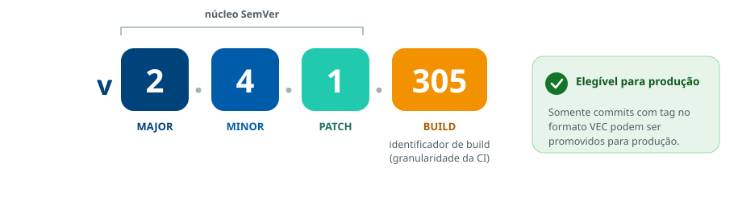

10
Diretriz
O tagueamento deve ser formalizado para commits de produção
Regra
As tags institucionais devem adotar o formato derivado do SemVer: MAJOR.MINOR.PATCH.BUILD (Padrão VEC), assegurando rastreabilidade, clareza e conformidade das versões promovidas para produção.
O Padrão VEC
FiguraMAJOR . MINOR . PATCH . BUILD

Por que o BUILD importa
- O incremento do BUILD dá granularidade, diferenciando compilações sucessivas de uma mesma versão lógica sem comprometer o histórico.
- Garante reprodutibilidade, permitindo reinstalações seguras e rollback imediato em incidentes.
- Correlaciona código-fonte, artefatos gerados e pipelines de implantação.
Elegibilidade para produção
Somente versões que possuam a tag institucional no formato VEC devem ser consideradas aptas para implantação em ambientes produtivos. Commits intermediários ou não homologados não podem ser liberados.
Referências metodológicas
Espaço reservado para os links institucionais sobre este assunto.